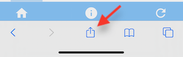
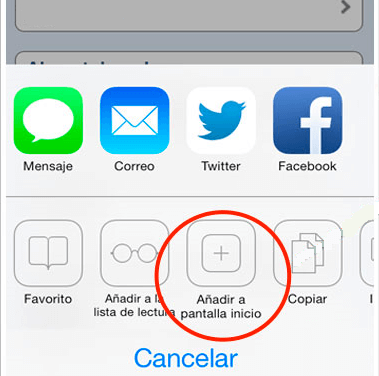

<h1>Para instalar en iOS</h1>
<mat-dialog-content style="text-align: left; line-height: 1.5rem">
  <p>1. Pulsa en el botón de compartir</p>
  
  <br />
  <br />
  <p>2. Pulsa en añadir a la pantalla de inicio</p>
  
  <hr />
  <app-install-information></app-install-information>
</mat-dialog-content>
<mat-dialog-actions align="end">
  <button mat-raised-button mat-dialog-close>
    <mat-icon>close</mat-icon> Cerrar
  </button>
</mat-dialog-actions>
